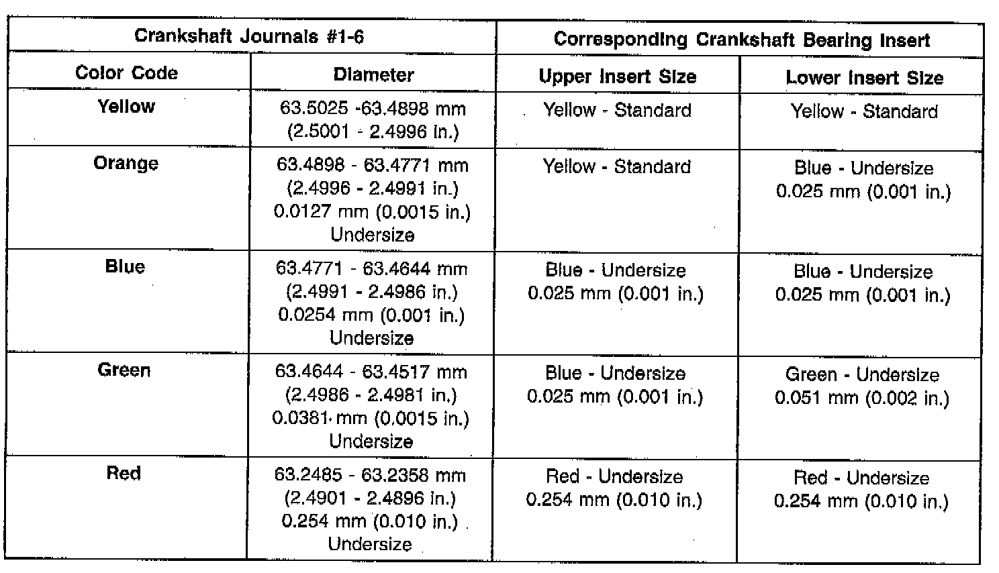
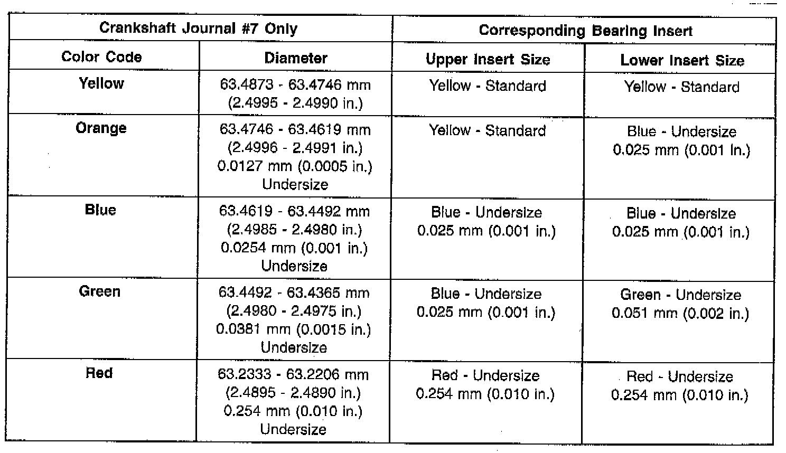
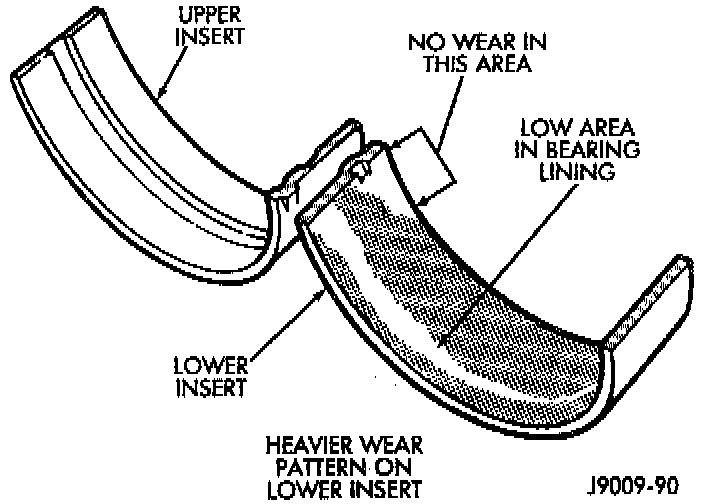
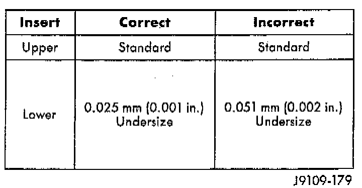
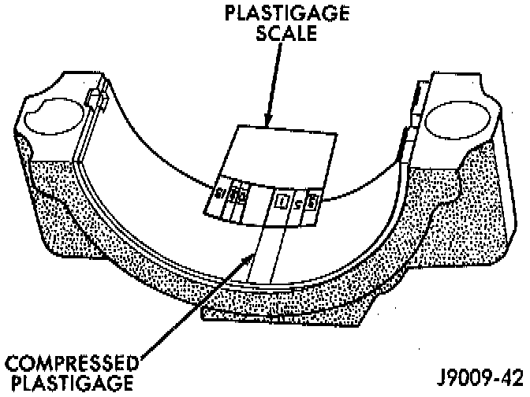

Fitting Bearings


NOTE: If any of the crankshaft journals are scored remove the engine for crankshaft repair.

INSPECTION
Wipe the inserts clean and inspect for abnormal wear patterns and for metal or other foreign material imbedded in the lining. Normal main bearing insert wear patterns are illustrated.
^ Inspect the back of the inserts for fractures, scrapings or irregular wear patterns.
^ Inspect the upper insert locking tabs for damage.
^ Replace all damaged or worn bearing inserts.
FITTING BEARINGS (CRANKSHAFT INSTALLED)
^ The main bearing caps, numbered (front to rear) from 1 through 7 have an arrow to indicate the forward position. The upper main bearing inserts are grooved to provide oil channels while the lower inserts are smooth.
^ Each bearing insert pair is selectively fitted to its respective journal to obtain the specified operating clearance. In production, the select fit is obtained by using various-sized color-coded bearing insert pairs as listed in the Main Bearing Fitting Chart. The bearing color code appears on the edge of the insert. The size is not stamped on bearing inserts used for engine production.
^ The main bearing journal size (diameter) is identified by a color-coded paint mark on the adjacent cheek. The rear main journal, is identified by a color-coded paint mark on the crankshaft rear flange.

^ When required, upper and lower bearing inserts of different sizes may be used as a pair. A standard size insert is sometimes used in combination with a 0.025 mm (0.001 inch) undersize insert to reduce the clearance by 0.013 mm (0.0005 inch). Never use a pair of bearing inserts with greater than a 0.025 mm (0.001 inch) difference in size.
NOTE: When replacing inserts, the odd size inserts must be either all on the top (in cylinder block) or all on the bottom (in main bearing cap). Once the bearings have been properly fitted, install crankshaft main bearings.
BEARING-TO-JOURNAL CLEARANCE (CRANKSHAFT INSTALLED)
1. When using Plastigage, check only one bearing clearance at a time.
2. Install the grooved main bearings into the cylinder block and the non-grooved bearings into the bearing caps.
3. Install the crankshaft into the upper bearings dry.
4. Place a strip of Plastigage across full width of the crankshaft journal to be checked.
5. Install the bearing cap and tighten the bolts to 108 Nm (80 ft. lbs.) torque.
NOTE: DO NOT rotate the crankshaft. This will cause the Plastigage to shift, resulting in an inaccurate reading. Plastigage must not be permitted to crumble. If brittle, obtain fresh stock.

6. Remove the bearing cap. Determine the amount of clearance by measuring the width of the compressed Plastigage with the scale on the Plastigage envelope. Refer to Specifications for the proper clearance.
7. Plastigage should indicate the same clearance across the entire width of the insert. If clearance varies, it may indicate a tapered journal or foreign material trapped behind the insert.
8. If the specified clearance is indicated and there are no abnormal wear patterns, replacement of the bearing inserts is not necessary. Remove the Plastigage from the crankshaft journal and bearing insert. Install crankshaft main bearings.
9. If the clearance exceeds specification, install a pair of 0.025 mm (0.001 inch) undersize bearing inserts and measure the clearance as described in the previous steps.
10. The clearance indicate with the 0.025 mm (0.001 inch) undersize insert pair installed will determine if this insert size or some other combination will provide the specified clearance.
FOR EXAMPLE: If the clearance was 0.762 mm (0.003 inch) originally, a pair of 0.0254 mm (0.001 inch) undersize inserts would reduce the clearance by 0.0254 mm (0.001 inch). The clearance would then be 0.0508 mm (0.002 inch) and within the specification. A 0.051 mm (0.002 inch) undersize bearing insert and a 0.0254 mm (0.001 inch) undersize insert would reduce the original clearance an additional 0.0127 mm (0.0005 inch). The clearance would then be 0.0381 mm (0.0015 inch).
CAUTION:
^ Never use a pair of inserts that differ more than one bearing size as a pair.
^ DO NOT use a standard size upper insert and a 0.051 mm (0.002 inch) undersize lower insert. If the clearance exceeds specification using a pair of 0.051 mm (0.002 inch) undersize bearing inserts, measure crankshaft journal diameter with a micrometer. If the journal diameter is correct, the crankshaft bore in the cylinder block may be misaligned, which requires cylinder block replacement or machining to true bore.
11. Replace the crankshaft or grind to accept the appropriate undersize bearing inserts if:
^ Journal diameters 1 through 6 are less than 63.4517 mm (2.4981 inches)
^ Journal 7 diameter is less than 63.4365 mm (2.4975 inches).
12. Once the proper clearances have been obtained, install crankshaft main bearings.